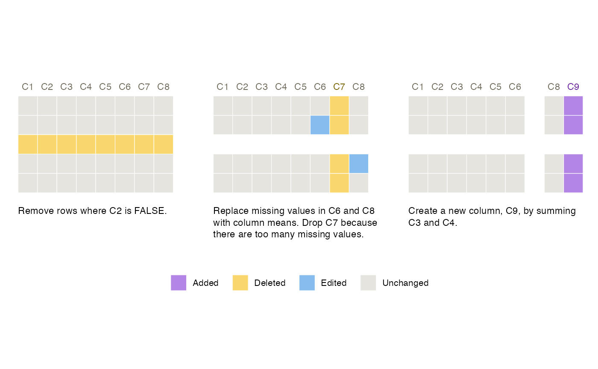

Builds a Smallset Timeline to visualise data preprocessing decisions.
Usage
Smallset_Timeline(
data,
code,
rowCount = 5,
rowSelect = NULL,
rowReturn = FALSE,
rowNums = NULL,
ignoreCols = NULL,
colours = 1,
altText = FALSE,
printedData = FALSE,
truncateData = NULL,
ghostData = TRUE,
missingDataTints = FALSE,
align = "horizontal",
font = "sans",
sizing = sets_sizing(),
spacing = sets_spacing(),
labelling = sets_labelling()
)Arguments
- data
Dataset that is being preprocessed.
- code
R, R Markdown, Python, or Jupyter Notebook data preprocessing script. Include the filename extension (e.g., "my_code.R", "my_code.Rmd", "my_code.py", or "my_code.ipynb"). If the script is not in the working directory, include the full file path.
- rowCount
Integer between 5-15 for number of Smallset rows.
- rowSelect
NULL, 1, or 2. If NULL, Smallset rows are randomly sampled. If 1, Smallset rows are selected using the coverage optimisation model. If 2, Smallset rows are selected using the coverage + variety optimisation model, which has a long run time for large datasets. Options 1 and 2 use the Gurobi solver (v9.1.2) and require a Gurobi license. Please visit https://www.gurobi.com to obtain a license (free academic licenses are available).
- rowReturn
A logical. TRUE prints, to the console, the row numbers of the rows selected for the Smallset.
- rowNums
Numeric vector indicating particular rows from the dataset to include in the Smallset.
- ignoreCols
Character vector of column names indicating which to exclude from the Smallset. These columns cannot be referenced in the data preprocessing code.
- colours
Either 1, 2, or 3 for one of the pre-built colour schemes (all are colour-blind-friendly and 3 is black/white-printer-friendly) or a list with four hex colour codes for keep, edit, add, and delete (e.g., list(keep = "#E6E3DF", add = "#5BA2A6", delete = "#DDC492", edit = "#FFC500")).
- altText
A logical. TRUE generates alternative text (alt text) for the Smallset Timeline and prints it to the console.
- printedData
A logical. TRUE prints data values in the Smallset snapshots.
- truncateData
Integer for the number of characters in each printed data value. Results in characters plus an ellipsis.
- ghostData
A logical. TRUE includes empty tiles where data have been removed.
- missingDataTints
A logical. TRUE plots a lighter colour value for a missing data value.
- align
Either "horizontal" or "vertical". For horizontal, snapshots are plotted left to right. For vertical, snapshots are plotted top to bottom.
- font
Any font installed in R.
- sizing
sets_sizing for size specifications.
- spacing
sets_spacing for space specifications.
- labelling
sets_labelling for label specifications.
Value
Returns a Smallset Timeline object, which is a plot consisting of `ggplot` objects assembled with `patchwork`.
Details
Prior to running this command, structured comments with snapshot
instructions must be added to the preprocessing script passed to
code. See section titled "Structured comments" in
vignette("smallsets") or in the
online user guide.
Examples
set.seed(145)
Smallset_Timeline(
data = s_data,
code = system.file("s_data_preprocess.R", package = "smallsets")
)
